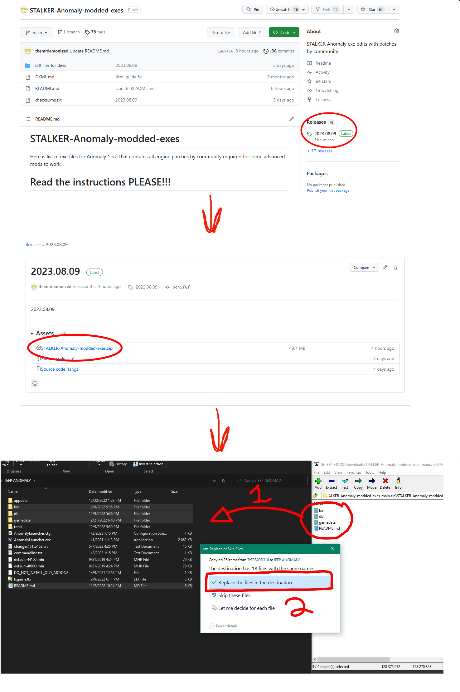

DLTX
Written by @nltp_ashes
1. About
Modding STALKER has this annoying tendency to result in conflicts when two different mods overwrite the same .ltx file, but not the same variables and sections within that file.
DLTX aims to mitigate this by allowing a mod author to only override the values that they actually wish to change in a separate file, which should greatly reduce the amount of needless mod conflicts and the need to manually merge mods.
2. Installation
DLTX is built-in the Anomaly Modded Exes.
- Download the file
STALKER-Anomaly-modded-exes.zipfrom this repository; - Back up the contents of your "bin" folder;
- Unpack the contents of the archive on top of your game's root folder.

3. Tools
To make the process easier for people uncomfortable with DLTX, or to automatically DLTX-ify older addons, you can use the LTXDiff tool.
LTXDiff findroot
In order to properly DLTX-ify a file, you need to find its root file. For this, you can either manually trace back the chain of #includes, or use the LTXDiff.
In order to make a differential change to the LTX records, you have to follow these steps:
Step 1 : Find the root file
Execute the following command :
Where :
[Base Folder] : A path to the unpacked vanilla files of the game;[Mod Folder] : A path to your mod's folder;[Relative Path to File] : A path relative togamedata/to the file you wish to find the root of.
For example :
Step 2 : Create your DLTX file
Once you have found the root file, create a new file in the same directory with the name :
Where :
[Root File Name] : The name of the root file you identified via Step 1;[Mod Suffix] : A unique name (as to not conflict with other addons) of your liking;
For example :
Step 3 : Write your DLTX edits/additions
Apply the changes or additions of your liking. See syntax chapter for more details.
LTXDiff dltxify
LTXDiff is capable of automatically converting conventional mods into a DLTX-ready format.
If you're lucky, the DLTXify by right click might work for you. Instructions about it are available on the addon's page. Alternatively, you can use LTXDiff dltxify.
Execute the following command :
Where :
[Base Folder] : A path to the unpacked vanilla files of the game;[Mod Folder] : A path to your mod's folder;[Mod Suffix] : The unique name you want to be used for your addon's file.
4. Syntax
The following table connects the different symbols used by DLTX to their corresponding feature(s).
| Symbol | Feature(s) |
|---|---|
! | Section override or Field override |
!! | Section deletion |
@ | Section creation/override |
> | Field CSV list addition |
< | Field CSV list deletion |
Section override
To override a section, you use the ! symbol before the section declaration.
To override the section called some_section :
[some_section]:parent_section
price = 5000
weight = 1.0
friends = me, myself, i
You use :
![some_section]
Please note :
- this alone does nothing, and needs to be used in combination with other things;
- when you override a section, you do not list again the parent sections inheritance.
Section deletion
To delete a section, you delete all the section's fields, and you use the !! symbols before the section declaration.
To delete the section called some_section :
[some_section]:parent_section
price = 5000
weight = 1.0
friends = me, myself, i
You use :
!![some_section]
Section creation/override
To create a section if it doesn't exist, or override it if it already exists, you use the @ symbol before the section declaration.
To create/override the section called some_section :
[some_section]:parent_section
price = 5000
weight = 1.0
friends = me, myself, i
You use :
@[some_section]
Please note :
- this alone does nothing, and needs to be used in combination with other things;
- this only exists in the Anomaly 1.5.2 version of the Modded Exes.
Section inheritance addition
To add a new parent section to another section, you add the new parent as you normally would, without listing all the existing parents again.
To add the some_other_section section as parent of some_section :
[some_section]:parent_section
price = 5000
weight = 1.0
friends = me, myself, i
You use :
![some_section]:some_other_section
Section inheritance deletion
To remove a parent section of a section, you prefix the parent section you wish to remove with the ! symbol in the list of parents.
To remove the parent_section section from the parent of some_section :
[some_section]:parent_section
price = 5000
weight = 1.0
friends = me, myself, i
You use :
![some_section]:!parent_section
Field override
To override a field within a section, you override its section and you redefine the field.
To override the field called price in some_section :
[some_section]:parent_section
price = 5000
weight = 1.0
friends = me, myself, i
You use :
![some_section]
price = 10000
Field deletion
To delete a field within a section, you use the ! symbol before the field declaration.
To delete the field called price in some_section :
[some_section]:parent_section
price = 5000
weight = 1.0
friends = me, myself, i
You use :
![some_section]
!price
Field CSV list addition
To add an item in a CSV list, you use the > symbol before the field declaration, and list the elements you want to add.
To add the item you in the field called friends in some_section :
[some_section]:parent_section
price = 5000
weight = 1.0
friends = me, myself, i
You use :
![some_section]
>friends = you
Please note :
- do not list again the elements already present in this list;
- this only exists in the Anomaly 1.5.2 version of the Modded Exes.
Field CSV list deletion
To remove an item from a CSV list, you use the < symbol before the field declaration, and list the elements you want to remove.
To remove the item myself in the field called friends in some_section :
[some_section]:parent_section
price = 5000
weight = 1.0
friends = me, myself, i
You use :
![some_section]
<friends = myself
Please note :
- do not list again the elements already present in this list;
- this only exists in the Anomaly 1.5.2 version of the Modded Exes.